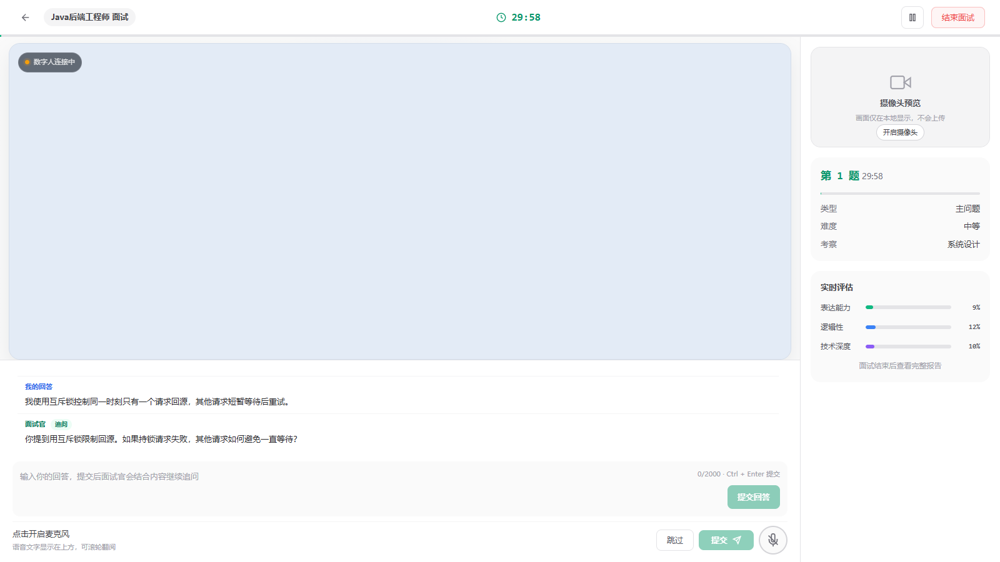
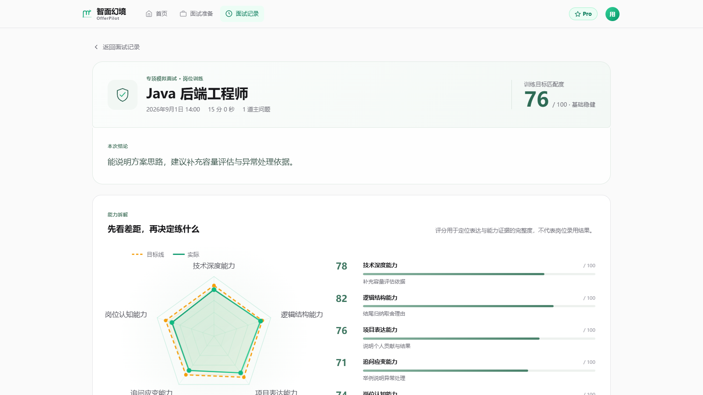

面向目标岗位的沉浸式 AI 模拟面试平台
场景体验 · 动态追问 · 多维诊断 · 行动建议
固定题目能练“准备过的回答”，但难以训练面试中的解释、追问与临场组织。
“如何处理缓存击穿？”
答完，切到下一题。
“你说使用互斥锁，热点键同时回源时，其他请求具体怎么处理？”
结合岗位与简历信息，组织更贴近目标的面试题。
计时、语音与文本输入，依据回答继续追问。
按能力模块查看评分依据、目标差距和建议。
设计重点：让“练习—反馈—再练习”形成闭环，而不是只给一个总分。
岗位、计时、题目、语音或文字回答与后续追问，集中在同一场景。

先确定考察目标，再让回答驱动追问；两层个性化分别解决“问什么”和“往哪里深问”。
岗位方向、能力标签、题型与难度约束。
项目经历、技能线索与目标方向。
按岗位组织主问题，并在回答后判断追问点。
“我用互斥锁限制同一时刻只有一个请求回源，其他请求短暂等待后重试。”
“你提到缓存击穿，具体如何避免热点键同时回源？”

每个能力模块对应实际分、目标分、差距、评分依据与练习建议；报告还能按优先级排列提升项。
系统维护十个能力模块的评分规则；一次面试可选其中五项聚焦评估。
从十个真实能力模块中选择，按训练目标调整重点。
大模型生成评分分析，服务端做结果校验；模型不可用时，规则评分保留基本反馈能力。
岗位准备、会话状态、对话记录、训练报告。
选题、提交回答、追问决策、超时与结束处理。
追问生成、评分分析、语音识别、数字人展示。
输出格式校验、无效结果处理、规则回退。
岗位准备、模拟面试、历史记录、报告复盘均有对应页面与服务。
覆盖追问结果处理、计时、报告与仪表盘等场景；不是模型效果准确率。
按“选岗位 → 回答 → 追问 → 报告”走一遍，让评委看到真实交互与结果。
场景化面试体验 × 动态追问 × 证据驱动的多维复盘